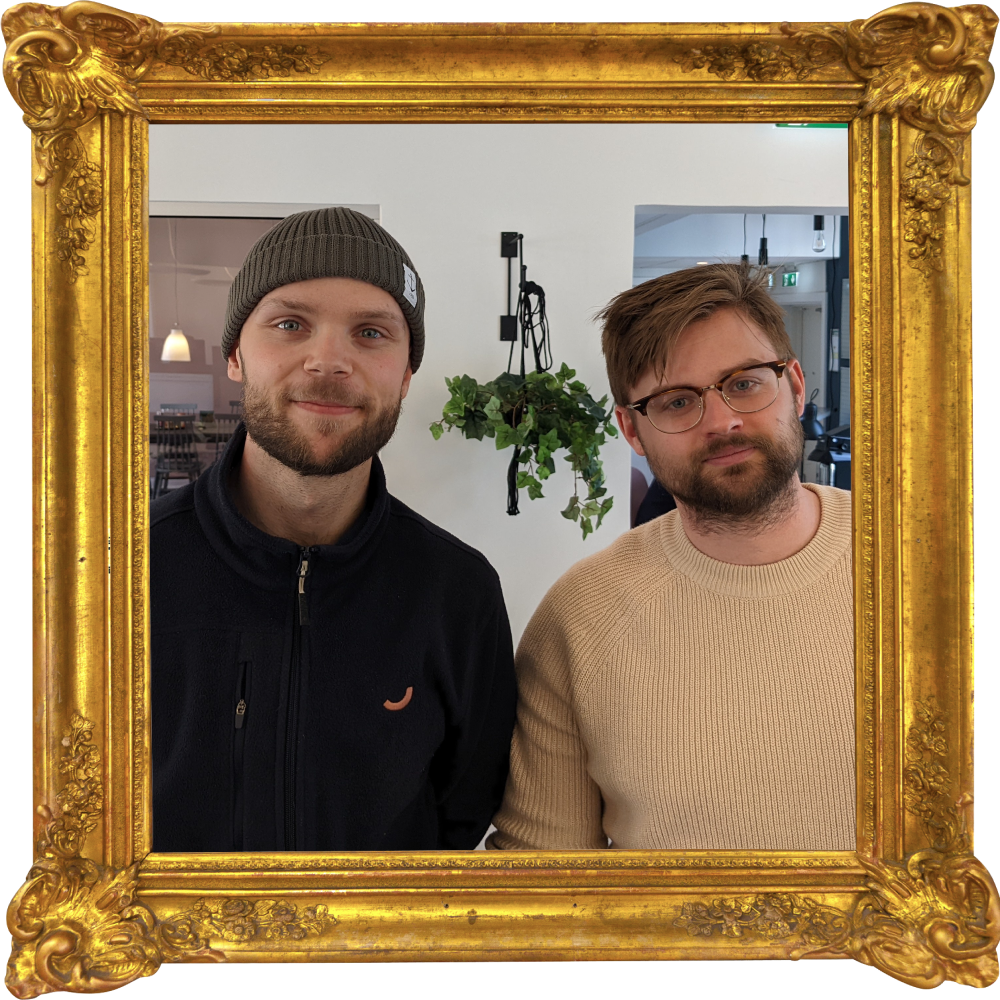
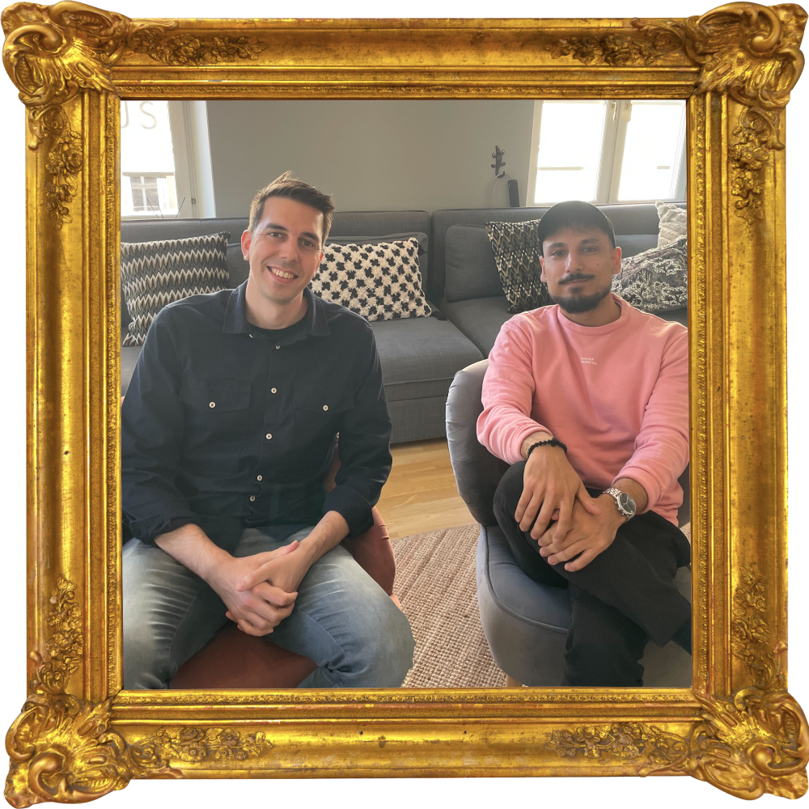
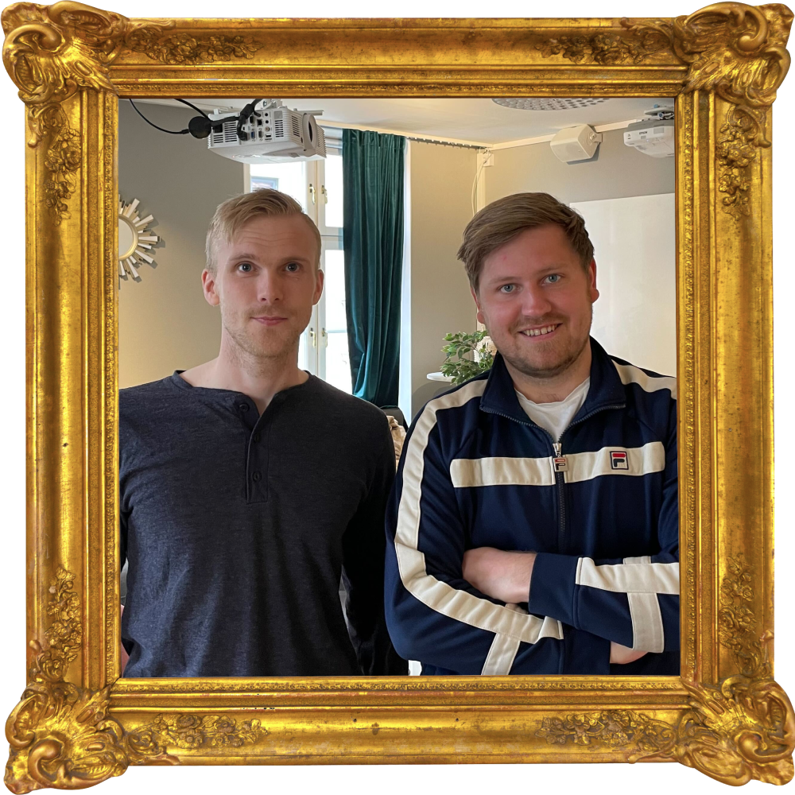
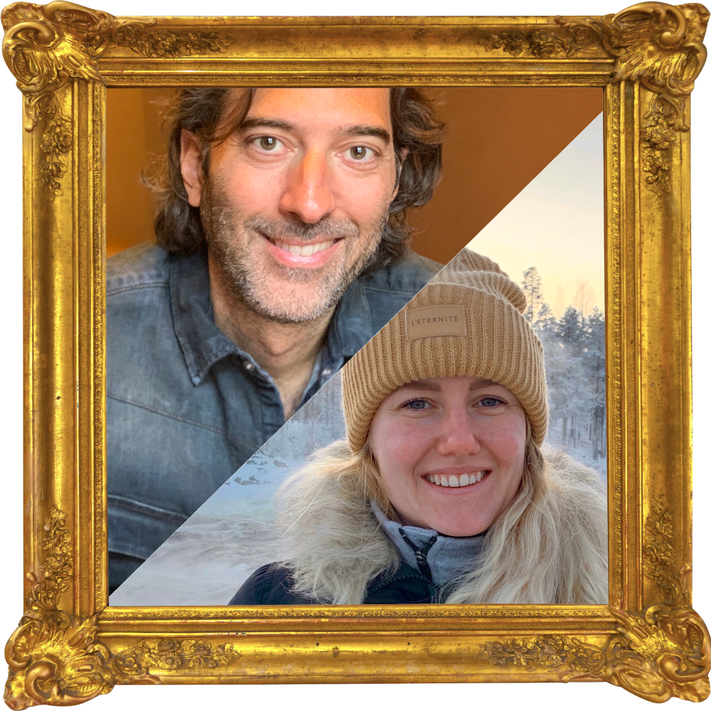
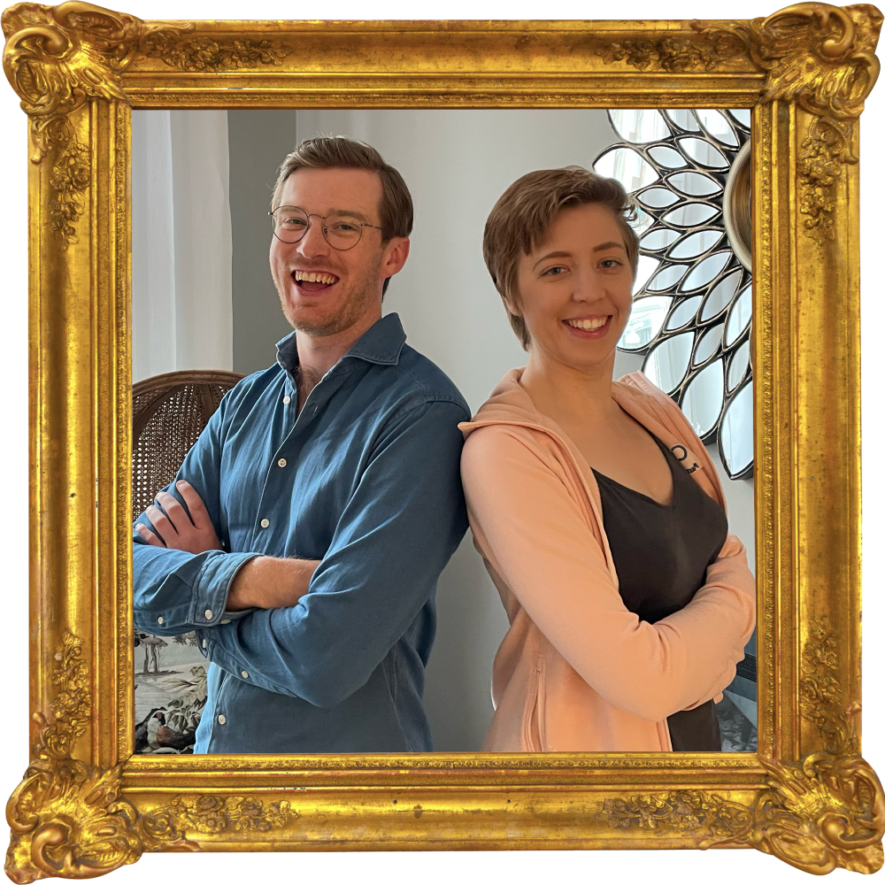
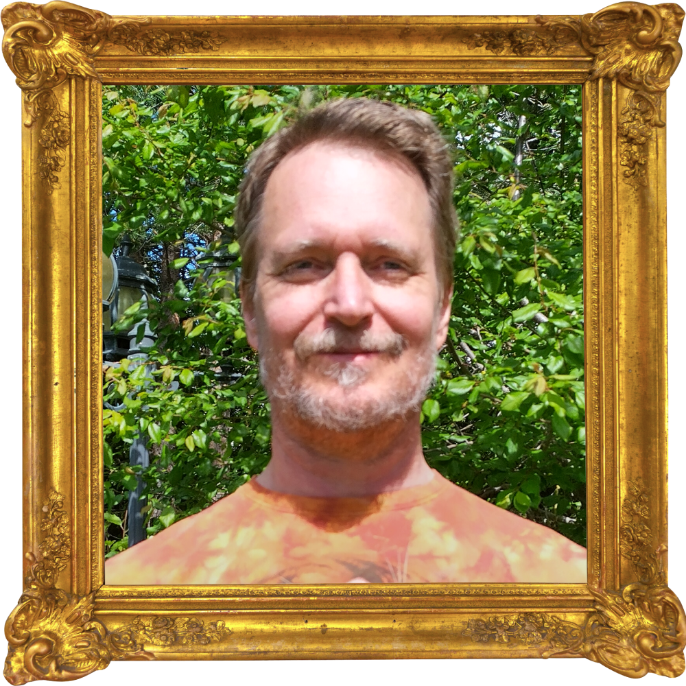

Workshops

EMBEDDED
Rasmus Lindy, Hampus Hessel
I denna workshop kommer vi lära oss grunderna i embedded-utveckling i C genom
att bygga ihop ett enkelt hårdvaruprojekt med en microcontroller och olika komponenter och skriva koden
för att styra den. Efter den här workshopen hoppas vi att ni kan allt som behövs för att kunna börja med
era egna små embedded-projekt.
Prereqs: Linux eller en dator med MacOS/Windows som inte är
Accenture-enrollad. Sätt upp utvecklingsmiljön i god tid innan workshopen.
Signup

OAUTH2
Yousif Touma, Anton Konkell
Har du jobbat i projekt där allt bara magiskt funkar när det kommer till autentisering och auktorisering? Känner du att du använder begreppen autentisering och auktorisering lite godtyckligt? Då kan detta vara workshopen för dig denna CTS!
Efter workshopen har du förhoppningsvis ett bättre eget språk och förståelse för dessa koncept och dessutom lite hands-on erfarenhet av att:
- Skydda resurser i en backend och kommunicera korrekta statuskoder vid olika tillfällen
- Förstå skillnaden på och använda Access Tokens och ID Tokens
- Följa best practice* med OAuth2 PKCE för få tillgång till backendresurser från en SPA
Best practice med liten brasklapp att det är anpassat till övningen.
Övningen kommer involvera Node med Express, React och Javascript/Typescript.
Prereqs: Node, Express.js, React, JavaScript, TypeScript
SignupSNACKA SNYGGT
Anna Ekblom
Modern retorik - så får du andra att vilja lyssna. Under denna workshop kommer
du få en introduktion till modern retorik. Du kommer bland annat få lära dig hur du bygger och behåller
din trovärdighet och hur du kan jobba med strategisk röst och kroppsspråk. Vi kommer även träna på
effektiv argumentationsstrategi och hur du hittar rätt argument för rätt person.
Prereqs: Inga
SignupMOBB-PROGRAMMERING REMOTE
Iris Classon
Iris Classon is an appreciated speaker, author and Microsoft .NET MVP with a
tremendous passion for programming and writing. She has been writing code for more than a decade for
renowned companies, small startups and everything in-between, and is an advocate of collaborative
programming such as Mob Programming and Pair Programming. Do you want to learn more about Mob Programming?
Here’s your chance! In this hands-on crash course, you’ll get a chance to try out Mob Programming. You’ll
work with a team of other learners to solve a coding challenge. Don’t miss out on this unique opportunity
to learn more about this popular programming methodology.
Prereqs: JavaScript
Signup

SERVER SIDE RENDERING (FULLSTACK)
Filip Carlén, Jesper Olsson Laine
Denna workshop blir en introduktion till Next.js, där vi tillsammans kommer
bygga en enkel wiki där vi utforskar fördelarna med server side rendering och static site generation. Att
bygga en webb genom ett ramverk som React har sina fördelar, men det är inte odelat positivt. Framförallt
innebär klient-renderade sidor en längre initial laddningstid samt att det blir krångligare att få till
bra SEO. Ibland vore det bättre att överväga att göra som i de gamla goda dagarna – att leverera
färdigrenderad HTML på varje request. Next.js är ett ramverk för React som möjliggör en hybridlösning av
static- och server side-rendering.
Prereqs: Node, React
Signup

LIGHTNING DECISION JAM
Lisa Hilferink, Ersan Curuklu
Lightning Decision Jam. LDJ is a workshop methodology to solve basically any
problem you or your team might face. It combines effective problem-solving techniques from Design sprints
and Design thinking into a tool that turns problems into challenges and finally into actionable solutions.
This workshop is for people who want an additional tool in their tool box to help them approach a broad
and fluffy problem in a structured way.
Prereqs: Inga
Signup

TILLGÄNGLIGHET
Josefina Andreasson, Emil Lundgren
Tillgänglighet i praktiken - hur gör man egentligen? Det sätts högre och högre
krav på hemsidor och dess tillgänglighet i olika branscher. För några år sedan kom DOS-lagen (lagen om
tillgänglighet till digital offentlig service) som innebär att alla hemsidor och appar i publik sektor
måste hålla en viss standard. 2025 kommer även en lag om att privat sektor ska hålla samma standard
(European Accessibility Act). I denna workshop kommer vi lära oss mer om hur tillgänglighet går till i
praktiken genom att ta en dålig hemsida och göra den bra. Fokus kommer ligga på det tekniska med inslag av
design. Efter den här workshopen hoppas vi att ni kan ta med er kunskapen och applicera på era egna
projekt direkt. Förkunskapskrav: HTML, CSS, JavaScript
Prereqs: HTML, CSS, JavaScript
SignupSÄKERHET - HACKING
Åke Bengtsson
Vill du lära dig mer om pentestning och hur man 'hackar'? Anmäl er på en
säkerhetsworkshop med kollegor från Sentor. Workshopen kommer vara tvådelad, där vi först gemensamt går
igenom de mest vanliga och allvarliga sårbarheterna och därefter kommer ni tävla mot varandra i att
praktiskt unyttja bristerna. Inga förkunskaper eller verktyg behövs, fast det kan underlätta med en
intercepting proxy (t.ex. OWASP ZAP eller Burp Suite) installerad. Åke har jobbat som pentestare de
senaste 6 åren och innan dess (webb)utvecklare under 6 år. Han jobbar idag som senior pentestare och
kodgranskare på Sentor MSS AB, också en del av Accenture. Sentor har nästan 25 års erfarenhet av
säkerhetsarbete (pentestning, övervakning, infosäk och applikationsäkerhet) och har idag den största
gruppen pentestare i norden.
Prereqs: Inga
Signup

PROGRAMMERINGS-PARADIGMER
Torbjörn Gannholm
En resa genom programmeringsparadigmer. Först en snabbtur genom begrepp som
används för att karakterisera programmeringsspråk, t.ex. ”deklarativt” och ”uttrycksfullt”. Vad är det för
vits med typsystem? Vi provar på att skriva kod i ett funktionellt språk (F#) och ett objektorienterat
språk (Dart), och funderar på när det kan vara lämpligt att använda den ena eller andra kodningsstilen.
Prereqs: Kodningen är ganska tillrättalagd, man får instruktioner för hur man
ska förbereda sig och skaffa rudimentär förståelse för F# och Dart. Kodningen i sig blir nog rätt mycket
cut-and-paste.
Signup